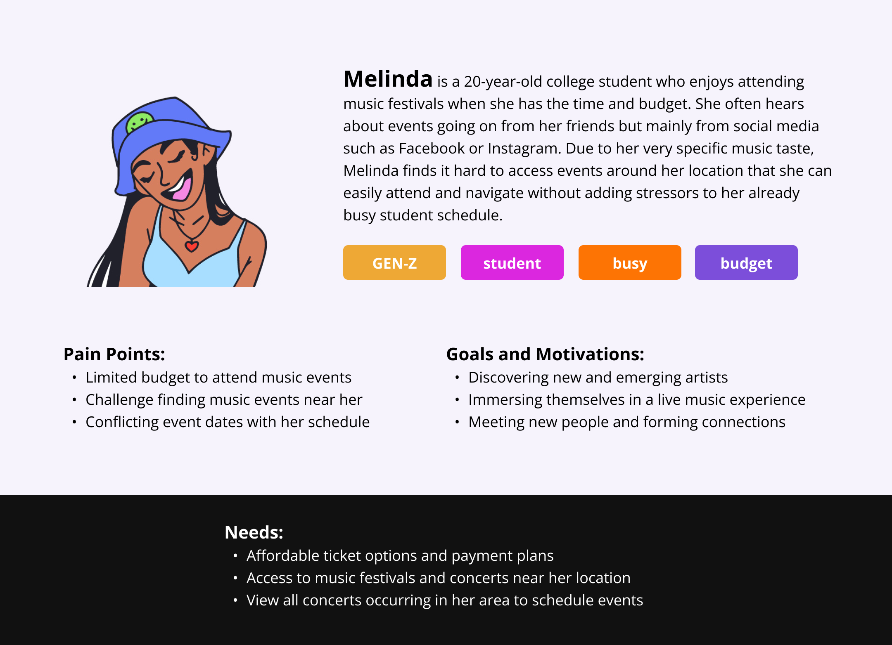
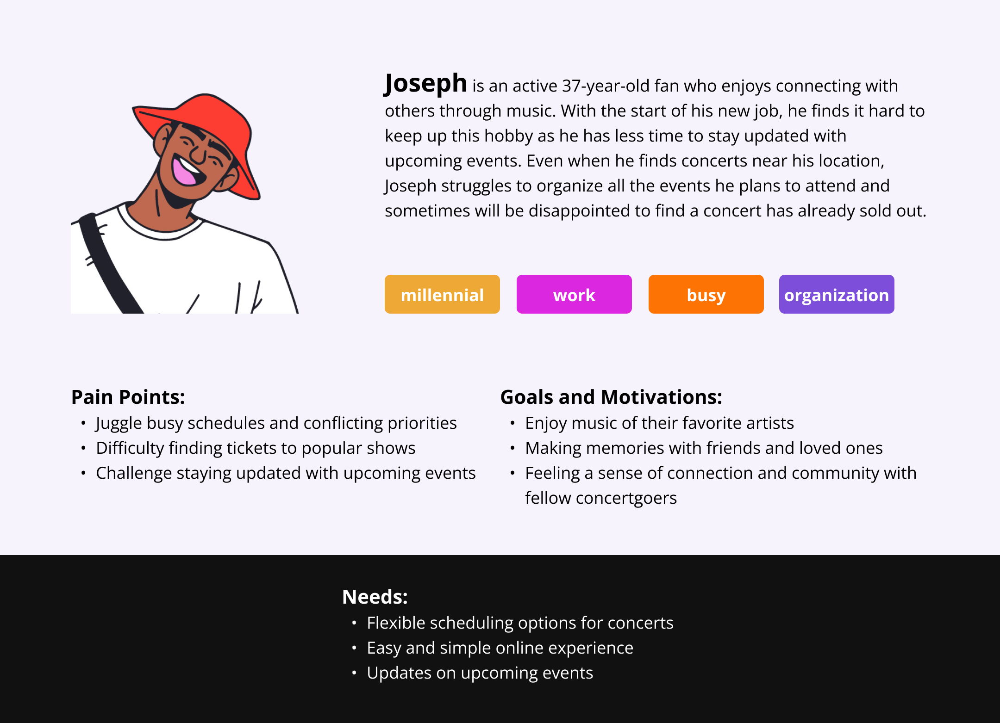
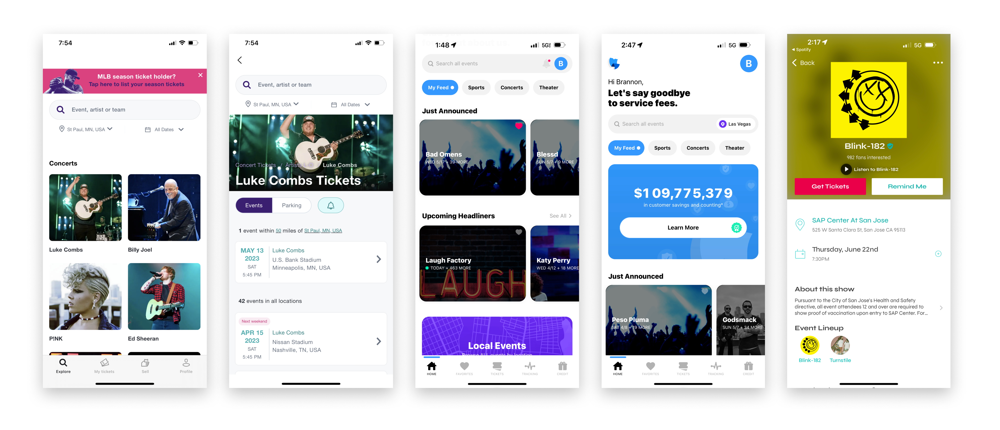
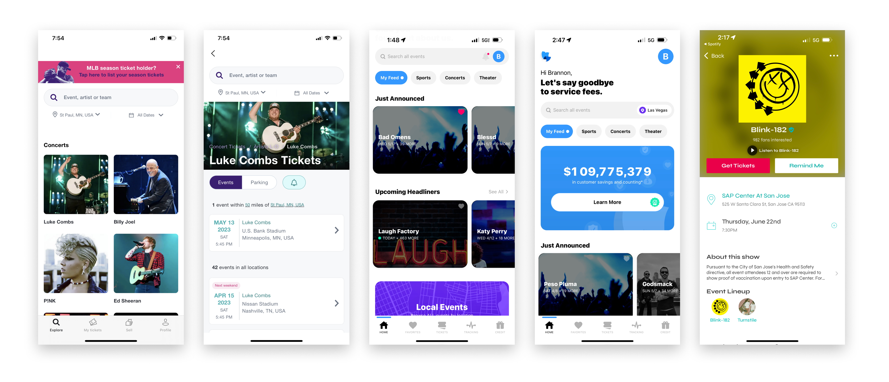
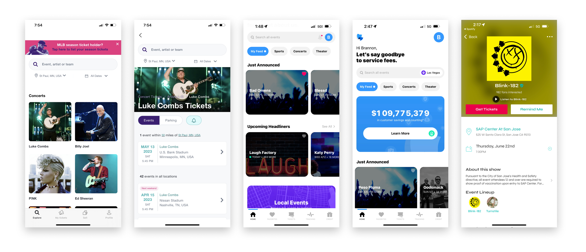

This project was completed during the Co.Lab training program. In a cross-functional team, we decided to continue on building the vision of Festa, a progressive web application (PWA) for Electronic Dance Music (EDM) lovers.
As the sole product designer on the team, I collaborated with stakeholders to ensure the product’s vision and goals were met. At the end of the intensive 8 weeks, my team and I delivered a live MVP of Festa, an entertainment aggregator of EDM concerts and music festivals.
View the live product →
Design Process
Problem Space
❝How might we improve the discoverability of EDM events for fans?❞
There is a huge market for the EDM industry but few platforms focus solely on providing a great user experience for EDM fans. We noticed that personalization of music events are vital to optimize the user’s time and value when looking for their next live music experience.
Product Goals
Give event recommendations to people based on their preferences (artist and location)
A notification system that reminds people of new events and live tickets on sale
Allow people to organize and keep track of their events
Our goal is to create a seamless and fluid experience for EDM fans across North America, enabling them to discover EDM music and concert events through personalized recommendations, even when they're not actively searching for live music events.
⭐Filters & Notifications⭐
This tool was inspired by social media platforms enabling users to filter out their content and stay alert when there are new updates coming through. This allows user to take control of what they want to see and increase trust among the user and the platform.
Within Festa, filters and notifications bring the EDM events to fans instead. Events will be shared and easily discovered with all the relevant information they need to make informed decisions.
Project Summary
Due to the fast-paced nature of this training program, my team and I redesigned an initial project by the PM. I surveyed the team to understand each member’s strengths and skillset to ensure the redesign was feasible to build within 4 weeks.
Research
After discussing with the team, specifically the PM, to understand the motive and idea for Festa, I realized that the initial user research piece was missing. There were no user interviews conducted nor market research to understand the business goals and market fit. Moreover, the initial problem space was too broad for our timeline of 8 weeks.
For the next steps, I spearheaded user research via user interviews (2 interviews), surveys (26 responses), and competitive analysis. I advocated heavily for the user needs of the PM despite the pushback to stick with the initial idea.
Fans often have to rely on social media and word of mouth to learn and discover new EDM events near them. This is not very efficient since they need time to find tickets to purchase and plan for any travel accommodations.
Fans struggle to find events timely.
All of this boils down to...
User Personas
I formed two principle personas to condense our findings from the survey and interviews. This helped in gaining empathy for the end user, gaining perspective in their process, and further who our users are, their frustrations and their expectations.


Competitive Analysis
What I learned from competitor's products from a SWOT analysis:
There is a huge market for the EDM industry but few platforms focus solely on providing a great user experience of EDM events to users
Personalization of music events is vital to optimize the user’s time and value when looking for their next live music experience
The onboarding stages of a platform determine the user’s overall experience

Ideation
User/workflow, Information architecture, Sketches, Low-fidelity mockups
The onboarding stage is the first step for users to see and curate the experience they want via personalization of events. From our user research, and location are important deciding factor for an event in the early discovery phase.
B. Date & location filters
Sift through events with specific dates in mind if users already know when they are available to attend an event. Change the location if needed to meet current needs.
C. Notifications
Stay updated with new and/or upcoming events that matches the user’s preferences of artist and location.
User Testing
I developed a click-through prototype on Figma to conduct 4 usability tests to get an in-depth understanding of how users interact with the new interface. We focused primarily on the mobile version of the application since changes were easier to implement.
Festa is an event aggregator of Electronic Dance Music (EDM) that assist EDM fans to discover music and concert events. Through personalized recommendations, fans are able to effortlessly discover events and set preferences to meet their needs by making the first step to music events more enjoyable.
Drawing inspiration from EDM posters and digital ads, I centered the theme colors
around a dark background with bright colors to mimic the flashy neon lights displayed
during a night festival. By knowing our target audience, we hope to tailor the platform
visually to compel and attract users.
Next Steps
If we were to continue with Festa, these will be our next steps:
Expand the API of the platform to include more diverse events
Increase the scalability of the platform to include a ticketing service and an event planning system (create the entire user experience)
Provide more event filtering options for users (e.g. price, distance, venue, etc.) ↩
Learnings
The biggest impact I made was collborating with my team of PM and software developers to make sure everyone understood our user base and their needs,↩ often visiting our personas.
I presented my findings often and advocated for the users when there was pushback by communicating the benefits users can have throughout the entire user journey.
More importantly, I listened and talked to the developers often to understand their needs and their technical skillset. I incorporated the feedback into my designs without compromising the user experience.
.png)


.png) 

.png)
.png)
.png)
.png)

.png)